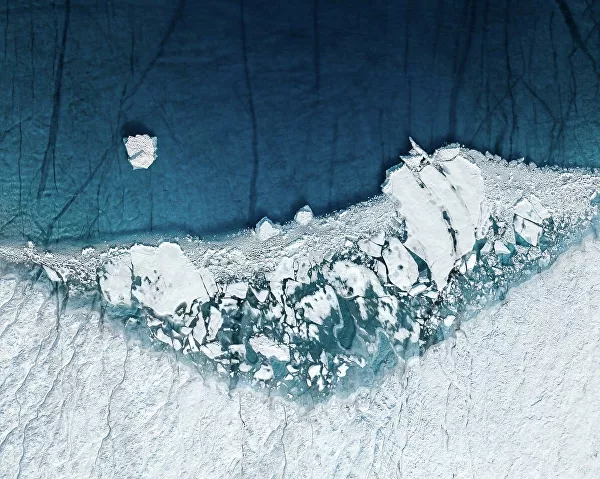

Экологические новости сегодня
В течение пяти лет индия полностью избавится от одноразового пластика.

Индия приступила к реализации программы,которая призвана очистить страу от одноразовых пластиковых изделий в течение ближайших пяти лет,заявил в пятницу премьер-министр южноазиатской республики Нарендра Моди.
03.10.2019
Земля выкрутится, мы – нет. Как животные спасают людей
Человек может сколько угодно истреблять жизнь на определенном участке планеты. Рано или поздно она туда вернется. Только самим людям без других живых организмов не выкрутиться.
04.10.2019
Новый облик Земли: загрязненные реки и тающие ледники
Немецкого фотографа Тома Хагена интересует отношение человека к природе и то, как деятельность людей влияет на окружающую среду. Он путешествует по всему миру и снимает тающие ледники, пересохшие реки, опустошенные земли. Ощутить серьезность проблемы помогает аэрофотосъемка.
05.10.2019
"Суд им не указ". Кто уничтожает заповедные леса
В Тверской области почти десять лет пытаются защитить от застройки заказник "Клетинский бор" с вековыми лесами на живописном берегу Волги. Областное Министерство природы, вопреки решениям судов, до сих пор не определило границы охраняемой природной территории регионального значения, поэтому уничтожение леса продолжается.
06.10.2019